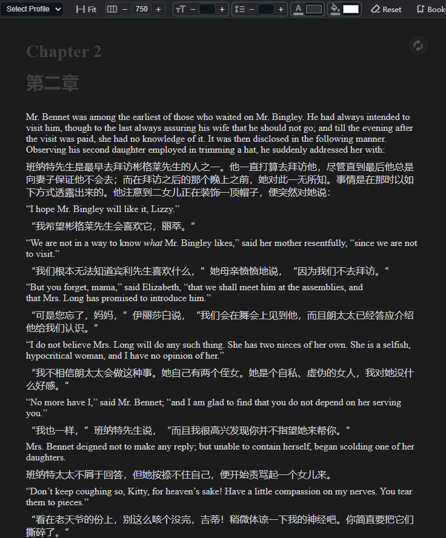
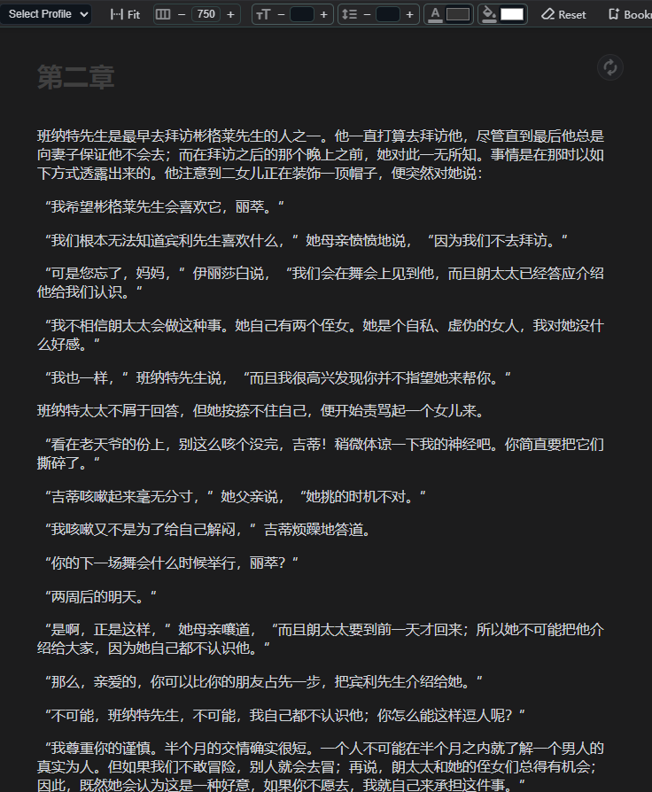
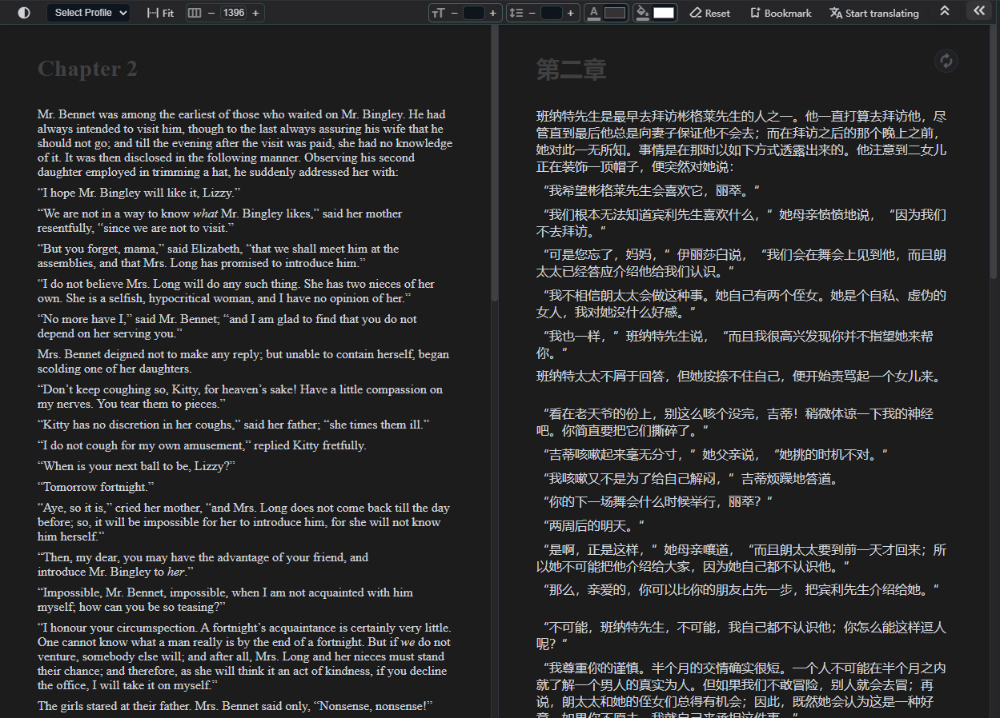

Translation Layouts
AI Translation can show the result in three ways, switched in the AI Translation section of reading settings.
Interlinear
The translation follows each source paragraph, original above and translation below in the same column.
- Good for checking sentence by sentence, or reading both texts together.
- Takes up more space than the original.

Translation only
Shows the translation alone; the original is no longer displayed.
- For when you only want to read the translation.
- Switch back to Interlinear whenever you need the original.

Dual-column bilingual
Original and translation side by side, with the two columns scrolling together.
- Best on a large screen.
- Dual-column total width sets the combined width; each column takes half.

Translation theme
The translated part can take a different visual theme — Default, Parchment or Thin border — so it is easy to tell apart from the original.